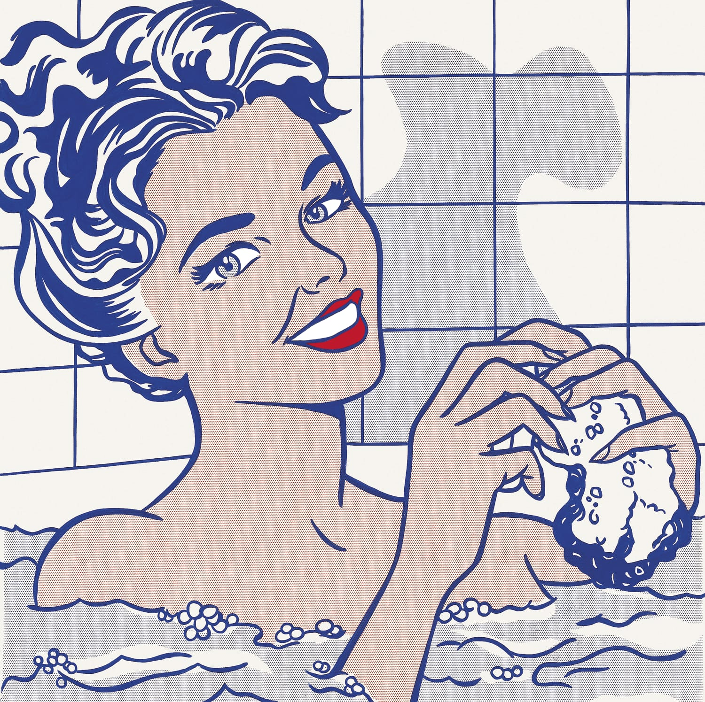

Andy Warhol

I Andrew Warhol was an American plastic artist and actor and played a crucial role in the birth and development of pop art.
I use different media to create my works, such as hand drawing, painting, printmaking, photography, screen printing, sculpture, film and music
I started with a series of screen prints using an image of the recently deceased actress with the aim of freezing in time the image that symbolized the personification of charm and glamor.


Roy Lichtenstein

The Pop Art is a movement that originating in the late 1950 in England and later in 1960 in the united state. The Pop Art represents consumerism that was in those decades from the 50s to the 60s.
In this image wanna show the smile that we provide us information and conforts us at the same time with the sensantion of everyday Life this paiting has everyday themes and universal.
Showing strengh emotional also teach emotions basic as love, disere, fear and sadness whit this paitings I invite you to imagine What has happened.


Characteristics of Pop Art
- Intention to bring art closer to the world and to reality.
- Use of figurative and realistic language to show the reality of the world.
- Rejection of abstract expressionism.
- The main theme was related to cities, cinema, television, comics, social aspects, etc.
- The forms represented generally had a natural or enlarged scale.
- Mixes and combinations of paintings with real life objects are made in the same work.
- They understood the subjects represented as justifications for the painting itself and its existence.
Other pop artists

Kurt Schwitters

Man Ray

Max Ernst